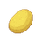

Drops analytics, ads, fonts at the network layer.
Stops timers and animations on hidden tabs.
Adds loading=lazy and fetchpriority=low.
Disables CSS animations and transitions site-wide.
Strips autoplay from videos and audio.
Removes preload, prefetch, preconnect.
Pauses <video> on hidden tabs.
Drops every script not from the page's own domain. May break sites.
Also blocks 3rd-party images everywhere.
Hides DOM bloat on YouTube, Reddit, Twitter, Facebook…
preload=none on every video; loads only on play.
Strips srcset. Can backfire on HiDPI.
Discards idle tabs when free memory dips.
Off keeps settings on this device only.